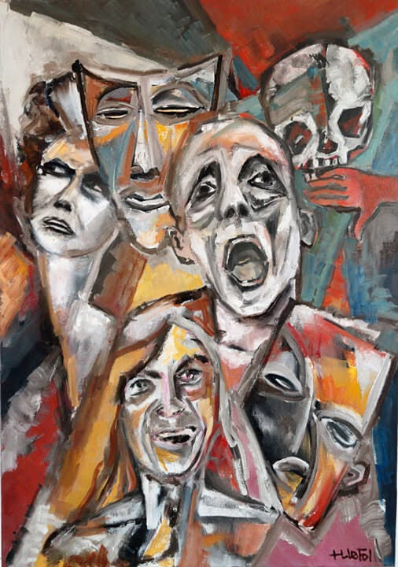

Mes états d’âme
Il y a des jours
où je me lève
avec le monde
sur le dos,
Les pensées lourdes,
les gestes lents,
Comme si chaque souffle devait
se justifier d’exister.
Je regarde le plafond
comme un ciel sans horizon,
Et je me demande :
Qu’est-ce que je cherche encore
à prouver à la vie ?
Je suis fait de silence
et de bruit,
De nuits trop longues
et de matins trop courts.
Je cherche un équilibre
entre ce que je montre
Et ce que je cache
derrière mes sourires fatigués.
Je suis un peu de tout,
Un peu de trop,
Un peu d’ailleurs aussi.
Je vis entre les lignes,
Entre les rires qu’on force
Et les silences qu’on cache.
Puis il y a ces heures claires,
Où tout paraît possible.
Je me sens vaste,
traversé de lumière,
Plein d’une force tranquille
que rien ne menace.
Je souris sans raison,
Je marche avec ce sentiment absurde
Que la route elle-même me reconnaît.
Parfois je me sens fort,
presque invincible,
Prêt à prendre le monde à pleines mains,
À en briser les murs
pour respirer plus grand.
Et puis,
sans prévenir,
tout s’effondre.
Une phrase,
un souvenir,
un vide,
Et me voilà de nouveau dans la tempête.
Je suis parfois la lumière —
Celle qui éclaire les autres
sans savoir pourquoi,
Celle qui sourit
même quand tout brûle à l’intérieur.
Et parfois je suis l’ombre,
Épaisse,
lourde,
sans contours,
Celle qu’on ne regarde pas
mais qu’on ressent.
Mais souvent,
entre les deux,
Je tangue.
Je suis ce navire sans port,
Bousculé par des vents contraires :
Le doute,
la colère,
l’envie,
la tendresse,
Tout cela s’entrelace,
se brouille,
Et me rend humain jusqu’à la brûlure.
Je suis à la fois feu
et cendre.
Je brûle de vivre,
Mais je crains toujours
de trop m’approcher des flammes.
Je veux tout comprendre,
tout sentir,
Et parfois je ne supporte plus rien.
Je suis le calme
avant la tempête,
Et la tempête sans fin.
Je cherche un abri en moi-même,
Mais souvent je trouve juste un écho.
Il y a la nostalgie —
cette amie toxique —
Qui revient sans prévenir,
Me rappelle des visages perdus,
Des rires qui résonnent encore dans le vide.
Elle me serre le cœur,
Et pourtant je l’invite à rester,
Parce qu’elle me prouve que j’ai vécu.
Je porte en moi des visages
que le temps a effacé,
Des promesses tenues à moitié,
Des rêves qui refusent de mourir.
La nostalgie me serre souvent la gorge,
Mais je la garde,
parce qu’elle prouve que j’ai aimé.
J’ai peur de perdre ce que j’aime,
Et encore plus de ne plus aimer du tout.
Et j’ai connu la colère —
Froide,
Lucide,
Presque belle,
Quand elle me pousse à ne plus subir.
J’ai connu la colère —
Celle qui monte comme une vague,
Qui te fait croire que tout casser te libérera.
Et puis la tristesse —
Fine,
lente,
obstinée —
Qui s’installe sans bruit
Et te vide sans te prévenir.
Je ris pour oublier,
Je parle pour ne pas crier,
Je me tais pour me protéger.
Il y a des jours où je me fuis moi-même,
Et d’autres où je me retrouve
dans le moindre battement de mon cœur.
Mais j’ai connu aussi la tendresse,
Celle qui t’effleure sans rien demander,
Celle qui guérit sans faire de bruit.
Et la joie —
Simple, vraie,
Celle qui n’a besoin de rien d’autre
qu’un instant.
Il y a la peur aussi,
Celle qui glace le sang,
Celle qui s’invite dans la poitrine
Au milieu de la nuit,
Celle du lendemain,
Celle de ne pas être assez,
Celle de perdre ce que j’aime
Ou de ne plus rien ressentir du tout.
Elle se glisse dans mes nuits,
Me réveille en silence,
Et s’assoit à côté de moi comme une ombre familière.
Parfois je m’en veux,
De ne pas savoir qui je suis,
De trop penser,
De trop vouloir.
Et puis je me pardonne —
Parce qu’à force de chuter,
On apprend à tomber debout.
Mais il y a l’amour —
Dans ses formes folles,
calmes,
brutales —
Il m’apprend à renaître chaque fois,
Même quand tout semble fini.
Il me traverse comme une marée,
M’emporte,
me vide,
me remplit,
Et quand il repart,
Il laisse en moi des rivages nouveaux.
Mais j’ai aussi connu la paix,
Dans le calme d’un regard,
Dans le silence d’une main
posée sur la mienne,
Dans ces instants suspendus
Où je n’ai plus besoin de comprendre,
Juste d’exister.
Je porte le passé
comme un manteau trop grand,
Je traîne mes doutes
comme des valises pleines d’air,
Mais j’avance quand même.
Pas toujours droit,
Pas toujours fort,
Mais toujours vrai.
Je suis fait de tout cela :
De fissures
et d’élans,
De blessures qui respirent encore,
De rêves qui refusent de mourir.
Je change,
je chute,
je recommence.
Je suis chaos,
je suis clarté.
Et peut-être que c’est ça,
Vivre :
Tenir debout au milieu de la tempête,
Et continuer à se reconnaître
Dans chaque éclat du vent.
Je suis contradictions
et vérité mêlées,
Fierté
et fragilité,
Manque
et plénitude,
Blessure
et guérison.
Je tombe,
je me relève,
Je doute,
je recommence.
Je suis fait de contradictions :
Je veux avancer,
mais j’aime mes blessures ;
Je veux la paix,
mais je cherche le tumulte ;
Je veux tout sentir,
même ce qui fait mal.
Et malgré tout,
Malgré la fatigue,
Malgré les jours où tout semble vide,
Je garde en moi une étincelle :
Celle qui dit
que rien n’est fini,
Tant que je respire encore,
Tant que j’ai la force de dire —
Je.
Et au fond,
C’est peut-être ça, vivre :
Accepter d’être plusieurs à la fois,
D’avoir le cœur en chantier,
Et d’appeler ça —
moi.
_________________________________________
ETATS D'AME (2016) Peinture par Lefolhub
Djamel Metref
At Yenni le 10 octobre 2025

← Tous les poèmes